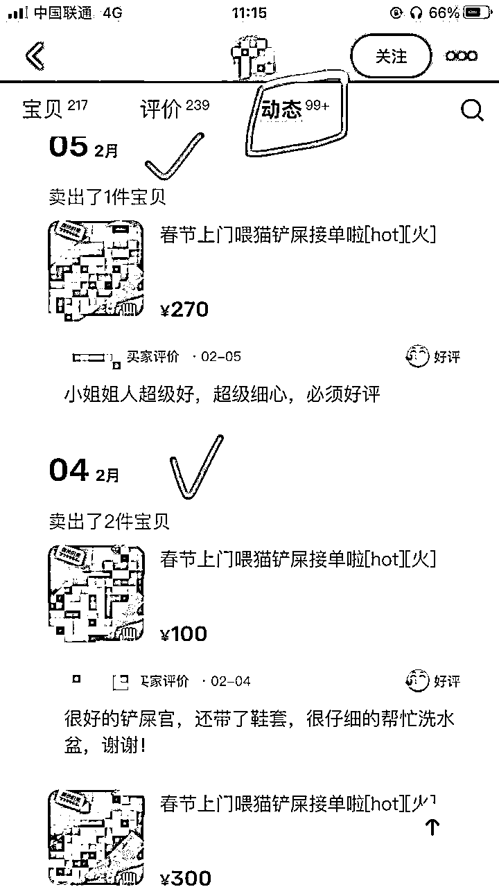

来源：https://lqhefhcsx54.feishu.cn/docx/Xe8TdDATRooEYdxZVIMcU9XUnYb
读帖可能认知只浮于表面，写帖才能让认知从你的内在真正生长出来。
做成一件事，不能只是做成了，致谢很重要，分享经验也很重要。感谢@HEXIN老师赠送的《明知创富指南》，我才看到这句话，于是就有了这篇复盘帖。
在当时上门喂猫的中标帖子有圈友说--“如何避免进入无人室内后比如财产丢失类的纠纷”，这也是我的第一反应，看到亦仁回复真的当头棒喝--“这就是典型的脑补太多。”下面评论区有圈友回复可以挂脖子拍视频，然后我就上网搜挂脖子的相机，一搜全是几千块钱的大疆运动相机之类的，想想投入成本大啊，看当时的我多傻，搜商太差了，因此蠢蠢欲动的上门喂猫就搁置了。
闲鱼虚拟资料航海跟着@大钟教练的步伐，我终于在航海中变现，真的一毛钱一分钱的开始赚，别提多开心。
但是航海结束后动力就开始不足，流量曝光也变差，很快就准备过年，想着好好过大年的休息惰性就冒出来了，就主动加入官方的“生财小组大作战”，过年坚持刷帖顺便分类标签的活动。
刷生财贴是非常快乐的一件事，我感觉我自己又涨见识，又会了一样，就是光看不做，这是我的毛病。我就给自己下个目标，过年期间至少刷完帖实操一个小项目。首先就从亦仁下手，超级标的精华帖作者都很厉害，原本AI方向是重点下功夫的方向，但是我好像也没能力单独做成一个赚钱项目，于是刷到上门喂猫的超级标，正好过年可以干呢。
脑海里立马就想着成本投入：
第一视角相机（预估1000元）：胸前夹（16.5元）+旧手机（忽略）
一次性喂猫工具（预估100元）：一次性鞋垫（9.9元）+一次性手套（用厨房的）+防抓手套（15.8元）+一次性垃圾袋（用厨房的）+一次性口罩（用疫情期间剩的）
直播工具：腾讯会议（做任务嫖免费时长）
实际花费不到50元的投入成本，我就立马开干。
特别喜欢稻盛和夫的说的这句话，渔夫出海前，并不知道鱼在哪里，可是他们还是选择出发，因为他们相信，一定会满载而归，人生很多时候，是选择了才有机会，是相信了才有可能。
盲盒版的咬人捣乱应激猫咪，因各种问题可能坑我的猫咪主人，屎尿毛脏乱差的家庭，这是我脑海里想过最坏上门喂猫场景，我接受了，我就不怕了。
剽悍一只猫说过一句话：高效成长的关键法门是大量面对真实的人，真实的场，真实的问题。这不就是项目的全部内容嘛，我需要面对不知道什么性格的客户，真实的喂猫场景，真实的铲屎过程的问题。整个过程是自己成长的一部分，也是赚钱闭环的重要内容。
我本身对猫咪不抗拒，经常喂小区流浪猫，就算被抓了打狂犬病疫苗2次依然抵抗不住它们的蹭裤腿和冲我喵喵叫，因为它们真的很治愈。
刚好朋友有两只猫，其中一只还怀孕，由于平常请教她猫咪的事情，她可能知道我不会伤害猫咪，很放心地就把2只猫让我过年期间照顾，回头请吃大餐，这不刚好是练手的机会，我怎么会错过呢？
美团：听她说宠物店寄养需要60元一天，我就在美团搜了当地的宠物寄养，确实是59~80元不等，每家店基本成交都一两百单，最低的有30~48元，但是评价少。
闲鱼：搜了同城喂猫，底价20元，想要数200+，浏览数2000+，这么多想要数和浏览数，证明需求不低，他的动态没隐藏还看到她已经上门喂猫2年，最大一单赚到1100元，其余喂猫的同行价格有23元35元，但是想要数都不及她，我想着我有10个想要数，100个浏览数也行吧，总不能她一个人喂完整个城市的吧，我怎么也可以分一杯羹吧。
跟着虚拟资料的闲鱼航海，我就按照手册去发帖，先找同行对标，复制文案，改成自己的收费信息。
上门喂猫等关键词搜一线城市的同行，想要数：浏览数 ≥ 1:10
显示近期出售情况如何，也就是转化数据怎么样，近期越多越好。一般同行「多天不间断出单＞3天」

如果动态被隐藏，就需要看评价、下方留言时间、回复率90%以上、卖出产品数等结合评定，并且需要多家同行一起结合。
由于我的闲鱼小铺之前卖虚拟资料，相当于杂货铺，店铺名字是清新的女生名字，头像是身材贼好的女生网图，所以没有特意修改成关于喂猫的垂直店铺，但是不影响流量。如果是新号的闲鱼店铺，可以适当把头像、店名、描述也修改成跟猫咪相关的信息。具体怎么开店可以参考闲鱼相关的航海手册，
12 月航海｜闲鱼虚拟资料｜实战手册
9 月航海｜闲鱼蓝海｜实战手册
下面讲产品直接上架的关键点。
一般只需要参考对标修改即可，通过堆积产品关键词的方法，让用户尽量搜索到你家店铺产品。
比如：
过年中秋国庆假期春节放假节日代上门喂养 随时可联系 广州上门喂猫喂狗上门遛狗上门陪玩上门喂养
广州白云区接上门喂猫服务，本人在白云区岭南新世界
广州上门喂猫喂狗，长期接单，周一到周五晚上有空，周六周日全天有空
【上门喂猫】（南山区+宝安区）
❗2025春节不涨价！！南岸区上门喂猫逗猫35一次，喂狗遛狗45一次。
--减少沟通成本
a、就近位置作为起点，关键词「XX小区/XX商场广场」
b、公里数猫咪数价格，关键词「4公里免路费每多2公里加5元+多1只加5元」
--低价吸引
c、鉴于过年春节很多同行可能会临时加价，我发帖就加关键词「春节不加价」，目的不是为了卷价格，而是获取更多的流量曝光，并且把第一波客人先收入囊中。
d、参考了同行是4公里内1只猫都是20~30元/次，折中后价格设置「25元」。
--放下雇主顾虑
e、由于之前喂流浪猫被抓伤2次，年前抓了又去打了加强针，半年内如果再被抓也无需再打，普通家庭的猫咪一般都会打疫苗，所以就算我被猫咪抓伤，也不需要雇主负责，关键词「刚打完狂犬病疫苗加强针」
f、由于我没有照顾过生病猫咪的经验，预估生病猫咪会抗拒照顾，例如喂药、滴眼药水、洗耳朵、驱虫，并且保证其他雇主猫咪不被病菌传染，关键词「不接生病猫咪」
g、由于与雇主微信视频只能录屏，但是客户结束通话后视频就会中断，如果我还需要最后收尾工作如检查门窗关门等动作就不能有效被记录下来，所以我需要全程直播录像录音，关键词「不接无监控不允许录像」
清晰+干净+体现卖点
主图需要清晰的猫咪或者文字描述，干净的猫咪和版面设计，重点突出喂猫价格、服务范围等内容。
次图可以通过闲鱼同行、拼多多淘宝小红书等平台的主页或者评论区找猫咪的各种图，或者你自己养猫的图，或者你帮朋友喂过的图，或者代喂服务过别人的截图。下面的闲鱼同行图可以参考看看，网页版可以直接复制图片无水印，手机版可以截图，清晰就可以。
我主图是朋友圈猫舍的小月龄猫咪，我的次图是自己在小区喂的流浪猫，这里就不放了。
文字版可以参考如下，大家可以搭配着使用。
【标题】
a.喂猫接单【深圳南山西丽塘朗长岭陂深圳北站上门喂猫铲shi】基础版 崇文花园 塘朗村 田寮 御领公馆 朗麓家园 深圳大学城 宝能城 塘朗城 南山智园 御景峯 阅山境
b.春节节喂猫，过年上门喂猫遛狗服务正常接单中…三林，浦锦，前滩均可 芦恒路，和炯路，江松路，浦锦路等沿线
c.常年可接佛山南海上门喂猫/铲屎/陪玩，本人养有两只三花猪咪两年多，对养猫，喂养有丰富的经验
【价格】
a.注意 接过年期间上门 60元起 有意者可联系
b.三公里内喵喵35，汪汪40单次,多一只＋5
c.3公里以内：猫咪35元/只次，小型狗40元/只次（多一只猫＋5，狗+10）;3~5公里以内：50元/只次;5公里以上私聊（报销公共交通路费可接） 猎犬，性烈的毛孩不接
d.地铁塘朗站直线距离五公里内，1.5元/分钟，最低30分钟起，如距离较远交通费和路上来回时间成本须另算，特殊情况费用具体商议
e.收费标准：猫猫：基础服务：35/只，多宠+5/只；基础服务+玩耍：40/只，多宠+10/只；
狗狗：小型犬：40/只,中型犬：45/只,大型犬：50/只,多宠+10/只，大型犬+15/只
多只、多次、寄养可接另外沟通。
(部分收入会用来救助流浪的猫猫狗狗～）
【个人简介】
a.关于自己：做事认真负责，特别擅长逗猫，执业猫行为管理师（高级），目前正在学习宠物营养学
b.本人90后大姐，多年上门喂养经验，春节不离沪，期间有事情可随时联系
c.广州本地人，女生，会粤语，本人特别喜欢猫狗，小动物，养猫经验有多年持有认真负责的工作态度，每一个家庭有不同的状况，我都要1v1来了解家长的需求，针对需求提供对应的服务。
d.本人有六年养猫经验，家中有三只猫自养（三只均为领养），芝麻信用极好。最大的折耳猫十岁，有关节问题，规律服用软骨素和磷虾油，暂时未影响日常生活，欢迎折耳猫家长交流养护经验。
【基础服务内容】
a.1洗猫碗添粮换水;
2铲屎并清理猫砂盆附近洒出的猫砂;
3观察猫咪状态；
4陪玩(由主人选择是否需要）；
5提供视频、拍照反馈（可选择直播或服务完发视频）；
6完成主人要求的与猫咪相关的其他基础事项（如设置调整自动设备，喂罐头，补充猫砂等）
b.1铲屎、喂食、换水和清洗猫碗、换猫砂；
2按主人要求喂罐头零食化毛片等；
3清理周边卫生，可帮忙带走垃圾；
4陪玩：在宠物容许的情况下，陪玩20分钟左右，没接到指令尽量不碰宠物；
4整个服务过程为35分钟左右，具体视情况而定；
5如需其他项目服务如：给宠主煮营养饭或生骨肉（食材需自行准备）可商议（包括价格）
e.1上门添粮＋换水＋铲屎服务（不含洗猫砂盆）会自备一次性手套+鞋套（不接受生病中/未满3个月/带攻击性猫咪）如有隐瞒违反，我方有权立即终止交易
2以【南山地铁口】为中心，具体范围可私聊。节假日适当调整10%-30%之间
3正常范围是2只猫咪，超1只加10元/次，最多接三猫家庭。步梯4楼以上的楼层需加5元/次。
4.猫家长需提前备好猫粮，饮用水，猫砂等；打扫用具、猫用品、请放在醒目位置；最好能提供楼层外观图，方便辨认。要求一定要剪指甲，剪指甲，剪指甲，重要事情说三遍…！！！
5钥匙或门卡可选择寄快递/临时密码/丰巢柜/存放点（费用需猫家长支付），喂养结束后会放到指定位置。密码锁上门前请提前告知密码。
6请提前一天预约。当日急单需加30元/次。
7上门时间：根据当天情况安排（周末不额外收费）每次上门时间20-30分钟。可提供当天视频，异常状况会及时反馈。
【免责注意事项】
a.一定要告知宠物有没有生病，怀孕的状况。另外，狗狗的话，有没有护食行为等。
最好有摄像头，如果没有，本人也会用手机录全程的视频。
告知宝贝的状况（包括他们的习惯，喜好等情况）
b.收好贵重物品避免后续产生纠纷；
提前告知宠物性格、身体状况、疫苗是否齐全;
提前准备好爱宠所需物品：狗粮、垃圾袋、牵引绳等。
c.为避免其他纠纷，家长们请提前告知注意事项，家长自装摄像头，收好贵重物品，锁好卧室房门。家中财物如有丢失或缺损一律与本人无关。
d.只能照顾身体健康疫苗齐全的猫咪和狗狗喔，狗狗需要性格稳定友好，不抓咬扑咬陌生人，大过年的不想受伤T-T~(生病中、怀孕中、年级过大无法行走的宝贝请家长送到专业机构照看~)
提前收好家里的贵重物品，最好是家中开启摄像头，以免产生不必要的纠纷~
请确认家中已经做好封窗等猫咪生活必要的保护措施，收好易碎物品、电器、电线等一切威胁猫咪安全的物品，因上述原因产生的后果自负~
楼梯房只接猫猫和20斤以内小体型狗狗，狗太大怕遛弯爆冲下楼人和狗狗都不安全
d.家里贵重物品请收好或带走，锁好卧室门，避免造成不必要的误会，如有丢失，概不负责。
强烈建议家长安装摄像头并打开摄像头，便于了解宝贝的实时情况及服务情况，你我都安心放心。如果没有监控，会录视频或者打视频，如有纠纷，解释权在我。
宠物必须是健康，疫苗接种完善，无疾病，这点很重要！！！
请离开前准备好充足的猫粮、猫砂、水源、零食等宠物需要用到的物资。（可以在离开前拍视频告知上门喂养人）
请提前告知宠物的生活习惯，包括饮食、喜好、身体情况等。如果猫咪身体不适或者异常的情况一定要提前沟通。
钥匙/门卡可见面交接/同城快递/丰巢寄存（宠物主人自费），并告知门锁使用情况，避免打不开门的情况。
沟通完需要先拍下，上门服务时我点发货，上门结束后宠主再确认收货即可完成，全程走咸鱼。
e.宠物身体健康，打过疫苗
家中贵重物品请自行保管，最好安装监控
提前备好猫砂|尿垫，猫粮，水等必备品，提前告知家中猫咪进食习惯等基本情况
封好门窗，收起易吞食及其它的危险物品
若您家有特殊情况请提前告知
路径：进入闲鱼主页→点击卖闲置→填上准备好的标题和文案→附上图片→定位在服务起点→分类选宠物寄养/喂养→按照自己可以接受的服务时长选择天数→宠物种类选能服务的猫狗或其他，一般选猫→服务方式选上门→宠物体型可选可不选，看你能接受的小中大体型，或者在文案中进行标价→计价方式选元/次→价格自己根据当地城市情况和自己承受能力填写最低价格，后续客户报完基础情况，可根据猫咪数量、喂养要求、公里数等情况进行修改价格→原价可填可不填，一般我都填价格的2倍，显得价格优惠→支付方式选包邮→发布。
发布时间可以选择在早八（上班路上）晚八（晚饭后）中午十二点（午餐中）。
发布时尽量一个手机一个流量，不要用公用WIFI，不要单个手机多个账号切换，以免影响流量分发。
发布结束后，需要及时回复客户的私聊，消息回复不及时容易跑单，但是也不需要有负罪感，错过了就当做没有缘分。除了设置手机消息和闲鱼消息提醒外，订单多时可以安装@骄阳圈友做的闲鱼消息提醒插件闲鱼消息提醒插件编写教程
如果真的没留意到消息或者消息与手机对冲，可以设置自动回复。，
步骤：进入产品链接→管理→自动回复设置→默认回复填写客户可能问到的问题→开启宝贝自动回复
参考如下：
亲，我现在不在，喜欢可以拍下，我家在XX小区，你可以先自行核算公里数，预估可接受价格，或者报上你家地址方便我定位核算、猫咪数量、具体天数或者日期、喂养等要求，有问题留言哦，我会尽快回复~~
一般越早越好，最早是过了凌晨，最晚不要超过早上10点前。
路径：闲鱼主页→我的→我的交易→一键擦亮
增加店铺信用评价等级，提高鱼力值。
还没开通鱼小铺的账号，一般店铺库存默认1单，客户下单付款后，链接相当于卖出，平台会自动下架，这时虽然交易还没完成，但是需要原封不动重新发布链接，会获取非常大的流量，就算不成交也会有很多客户来询单，这时能接得住就就接。
路径：闲鱼主页→我的→我的交易→我发布的→已下架→找到喂猫链接点击重新上架→发布
不管是什么品，都要保持有上架的动作，可以是自己闲置的物品，虚拟资料等，当然最好是跟猫咪相关的链接，例如，重新编辑服务内容，重新配图，或者根据远近分阶段提出你的服务范围和质量，远距离、近距离、多猫的、服务内容多的多个产品链接，系统识别到同类型产品会有审核的动作，不用惊慌，过几分钟后就能正常上传成功。
因此我开始去卖自己的服务，直面小县城的喂猫市场，在变现过程中获得强反馈，让自己更有本事。
有意愿下单或者付款下单的都是上帝，必须充着，尽量满足需求，获取到想要服务客户，引导他发微信号，记得是他发，不能发你的，比如“我怎么找到你呢？”“需要给你发直播和录播的话，通过什么方便找到你”之类的话术，让对方主动发微信号，否则一不小心遇上同行容易被举报引流。
找个合理且不好拒绝的理由，比如“我在开车”，“刚在服务客户”，“刚你没下单我把时间留给了另外一个客户，需要一小时候才能接你单，可以吗？”。尽量过程不冲突不给自己找麻烦，以防客户反手一个锅盖给你。
客户问一个问题，尽量回复多个内容，减少沟通成本，让客户看到你的诚意和爽快。爽快下单的客户在微信特别标注，给予充分的服务之余还赠送额外服务，例如顺手扫地拖地、顺手扔垃圾、顺手浇花、多角度猫咪视频加图片传给客户等，让他安心顺心又惊喜。
服务过程问一个需求转一笔钱，到家转一笔钱，服务结束还有拜年红包，完超订单加钱后的标价，这样的神仙买家怎么也得供着啊。
a.12公里1只猫咪45元，想着有客户一起顺路，打八折36元。
客户嫌弃公里数远不愿加价，给出打折后的预期数依然觉得贵，不成交也没关系。
b.4公里11只猫咪，1只吃5粒药，10只感冒擦鼻涕擦眼屎滴眼药水，喂10天，25元+10x5=75元一次，10天750元，天数多优惠8折，750x0.8=600，算起来60元一次11只病猫，已经超级划算了，但是他说上一任喂猫的卖家40元全包下来，不带这么压价的，没病我都接了，全是病猫，没法接，果断舍弃。
c.18公里2只猫咪，喂10天，按公里数猫咪数算是65元一次，正价650元，由于服务周期长，优惠8折，520元可成交，但是客户依然嫌弃贵，距离远，偏远地方有人愿意跑一趟算不错了，珍惜吧。
后续需要根据需求优化服务质量。
首次沟通时主动询问客户核心诉求，如“你最关注猫咪的安全还是费用？”，快速识别价格敏感型客户。
用具体细节说明高价背后的成本（如喂猫经验、实时反馈、交通时间等），比如：“我的费用包含上门服务的时间成本、宠物突发状况的应急处理经验，以及每天的照片/视频反馈，确保猫咪安全。”
对预算有限的客户，可提供简化版服务（如减少单次互动时间、只铲屎加粮）或者附加价值代替降价（如赠送自己力所能及的小福利）
在沟通初期明确“价格透明，已是最优方案”，避免后期拉扯。若客户持续议价，可委婉表示“可能暂时无法满足你的需求”，为双方保留体面。
对比同类服务的定价区间，确保自身价格与服务质量匹配，按服务复杂度（如多猫家庭、喂药需求）设置不同档位，让客户自主选择。
客户好评，如“100%零事故”，增强信任感。
当你接受客户分层，并非所有客户都是目标用户，低价竞争可能牺牲服务质量，专注服务愿为品质付费的群体更可持续。既能维护服务价值，又能有效筛选目标客户，提升成交率与客户满意度。
在闲鱼收到客户下单付款后，无需等到服务当天，记得及时点发货，无需填邮寄地址，相当于整单都是定金，这时才能确定真实的需求，就算客户服务完后不确认收货，7天后平台会自动收货，钱就会到你账户。
下单后还没服务被临时被鸽的可以结束订单原路退回，也可以让客户申请退款，也可以让他给你补个辛苦费后再退钱给他。原本越年初三的客户没出游猫咪就无需照顾了，很礼貌地提前说，所以我也没有要他的钱，整单退，留个好印象。如果碰上你已经在路上了才被告知取消，这种可以大胆要补贴或者拒绝平台退款。
如果不在闲鱼成交也可以，毕竟平台会收软件费，微信成交也可以省一点软件费，但是我需要平台的流量和相互保障，以免扯皮等麻烦事情，所以我选择闲鱼成交，微信作为细节沟通、视频图片打包发送、直播链接发送、朋友圈造势的一个用途。
一般客户都会提前几天下单，最晚下单的都会提前2小时，所以有足够时间安排服务。
一般我会记录下客户的需求，除了地址和客户信息简写，其余全是真实数据，每天跑1~3家，9天9个客人400元不到。
| 下单时间 | 客户 | 地址 | 监控/开门方式 | 猫咪数/天数 | 报价 | 服务要求 | 服务时间 | |||
|---|---|---|---|---|---|---|---|---|---|---|
| 2月3日下单 | 77 | 荷5楼空房 | 1监控器/无锁 | 1只怕生猫/1天 | 35元 | 铲屎+换水 | 2月3日下午3点 | |||
| 2月2日下单 | x5 | 园20楼 | 1监控器/密码锁 | 3只温顺猫/1天 | 35元+拜年红包8.88元 | 喂吃喝+换猫砂+擦泪痕+梳毛+关客厅灯 | 2月2日下午3点赠送擦屁股屎赠送陪玩赠送扔垃圾赠送拆快递 | |||
| 2月1日下单 | 黄 | 城2楼 | 2监控器/同城取钥匙 | 4只猫， 社牛1+单独1+怕人2/1天 | 50元 | 混合喂养+混合猫砂+加矿泉水 | 2月1日晚上8点，赠送擦尿拖地扫墙皮洗厕所赠送陪玩 | |||
| 1月30日下单 | 意 | 居5楼 | 1手机监控/无锁 | 2只怕生猫/1天 | 不问直接下25元爽快+继续闲鱼转10元+继续微信转10元 | 铲屎+换矿泉水+重启手机 | 1月30日下午2点 | |||
| 1月30日下单 | U | 里10楼 | 1监控器/密码锁 | 4只猫/2天 | 50元 | 铲屎+检查猫窝是否是屎 | 1月30日上午11点额外赠送酒精擦地 | 2月1日上午8赠送额外摆放纸皮箱和猫玩具 | ||
| 1月28日下单 | y | 中 | 1监控器/密码锁 | 4只猫咪，1敏感乱拉+1社牛+2怕生/3天 | 90元（退款） | |||||
| 1月28日下单 | 心 | 园14楼 | 无监控/藏钥匙 | 2只仓鼠/1天 | 25元 | 粮是否打湿+水壶是否堵住水+加水 | 1月31日上午10点 | |||
| 1月27日下单 | 啦 | 园21楼 | 无监控/密码锁 | 1只猫/5天 | 100元+放心看回放 | 拿猫粮快递+换水+加粮+铲屎+关热水器电源 | 1月27日上午9点赠送陪玩 | 1月30日上午9点赠送陪玩 | 2月1日上午9点赠送陪玩 | 2月4日上午9点赠送陪玩 |
| 1月27日 | 梦 | 花 | 1监控器/密码锁 | 3只怕生猫/2天 | 50元 | 加猫粮+凉白开+移动水壶位置 | 1月29日上午10点赠送扔垃圾+擦猫砂盆 | 2月2日上午11点赠送陪玩 | ||
| 1月27日 | 玲 | 村 | 无监控/藏钥匙 | 2只猫，其中1只怀孕 | 试手，朋友请吃饭待兑现 | 加猫粮猫砂+铲屎+加水 | 1月27日下午2点 | 1月29日下午5点 | 1月31日晚上8点 | 2月2日上午9点 |
| 398.88元 |
由于佛系接单，我并没有网上说的爆单到钥匙要分开装，一天跑10趟的快节奏，多数是有监控用密码锁，其中一单需要跑去拿钥匙，更有甚者家里没锁仅仅关门而已（这类客户必须全程直播不能有侥幸心理），最近的在隔壁小区1公里不到，最远是12公里。
1、按照预约时间上门，告知客户已到达目的地楼下方便各种形式地开门
2、佩戴好胸前支架
3、旧手机发起腾讯会议+录屏到锁门离开那栋楼并扔猫屎
4、常用手机微信发送直播链接+沟通+拍照+拍视频
5、到客户家门口穿鞋套手套戴口罩
6、敲门+呼唤客户猫咪小名确认在家+开锁+开小缝隙进门+留意是否有猫咪冲出门
7、关门+呼唤猫咪小名+观察其精神状态+根据猫咪性格进行亲近（怕生的只需要跟客户确认它在即可）
8、熟络后按客户要求进行服务：一般多是先洗碗加粮加水，再去铲屎加猫砂，以免污染食物；粗养客户仅需要厨房的自来水，省养的需要煲开水放凉，精养的需要喝矿泉水。铲猫砂一般需要戴口罩，部分客人的猫砂除异味效果很差还扬尘不结块，铲完记得拍拍手袖和衣服的尘再洗手，有洒落的猫砂可清扫，部分客人自带垃圾袋的记得用他们专用的，我在家随便拿了个很薄的一次性没得提的垃圾袋，差点因为猫屎太多漏了。
9、需要特殊服务的按要求细致谨慎操作即可，除非客人要求进入他们的房间，非必要不要进去他们的卧室，以免出现扯皮事情，尽量在猫咪活动范围（猫粮碗和猫砂盆区域）进行处理。
10、过程出现问题及时跟客户沟通，比如，屎多不多什么形状的？猫咪身体是否有受伤？猫粮只吃了冻干其余没吃是否需要处理？阳台是否需要关门？猫咪屁股吊着一条屎是否需要处理？让客户清楚你在认真帮他照顾猫咪，真诚是必杀技。
11、服务过程中旧手机在直播可适当截屏（如，服务前后的猫粮碗猫砂盆大厅等，猫咪精神状态，猫咪的上厕所状态，陪玩猫咪的状态，粘在你身上的猫咪等），当然常用手机也可适当多拍视频多拍照片发给客户，尤其是猫咪跟你互动的视频，一来客人不担心猫咪的状态，二来为客人积累好评的图片素材，三来猫咪跟你熟络客户会更愿意回购服务。
12、服务结束告知客户准备走让客户有心理准备+跟猫咪拜拜+观察水电窗是否关了+开门留小缝隙出门留意是否有猫咪跟随出去+关门锁门+搭电梯下楼扔猫屎+告知客户已锁门离开+结束直播
13、生成的直播回放转发客户+照片视频一并回传客户+小结服务猫咪的情况，必要时夸赞小猫乖巧，一般主人聊到自己猫咪会滔滔不绝的。
以上是具体的操作步骤，可根据客户要求进行增减。不论客户什么脾性，花钱在我身上，我要做个靠谱的人，凡事有交代，件件有着落，事事有回应，增强链接感和提高复购率。
微信结束工作服务后，可以就着客户的满意程度，适当提出好评的需求，工作不忙的客户一般可以立即在闲鱼确认收货并好评，客户答应后忘了好评也没关系，也不要催，闲鱼平台到时间会自动收货的，前提是你已经发货了。
以上，是我第一次独立赚钱的一个小赚钱项目，可能我遇上的都是很爽快的客户，可能后面还有很多坑等着我踩，但是没关系，我还是会继续进步。期待下一轮的五一、国庆中秋、春节的战果！
时间灵活的学生/自由职业者/宝妈：节假日空闲多，能应对高强度接单。
动物爱好者：有养宠经验，熟悉宠物习性，能应对突发状况（如猫咪应激）。
体力较好者：需长时间骑车/步行、搬运猫粮猫砂，高峰期日均服务8-10家。
细心耐心的人：需按主人要求清洁、陪玩、反馈细节，避免纠纷。
主要时段：春节、国庆（占全年订单70%以上），其次是五一、中秋等长假。
提前准备：节前1-2个月开始接单，需密集服务（如春节连续10天上门）。
非节假日：订单极少，不适合作为稳定收入来源。
一线/新一线城市：北京、上海、广州、深圳、杭州、成都等需求最集中（养宠人群多、消费力强）。
三/四线城市：养宠客户居住稳定
优先选交通便利区域（如地铁沿线），缩短通勤时间。
避免跨区接单（如北京朝阳→海淀），体力消耗大且效率低。
小城市公交班次不多，我一般开摩托车出行。
提高客单价--增加陪玩、梳毛、剪指甲等增值服务（单项加收10-20元）
转型高端服务--转向宠物培训、上门美容等高端服务，或建立团队覆盖更多区域
节假日地推--多宠小区或宠物店/医院附近小区或高档小区贴海报拓展新客
多平台多发--多平台矩阵发布引流
带货分佣--直播素材转成人设IP系列内容，如《上门喂猫盲盒日记》《100只猫的性格图鉴》，记录服务中的趣味瞬间，吸引爱宠人群，视频中植入宠物用品，链接平台分佣或者宠物品牌推广合作
私域衍生周边变现--代售定制项圈，宠物写真集，与宠物医院美容店联名推出折扣卡赚分成
节假日溢价--推出节日安心包含直播回放和每日健康报告，增强信任感和复购率
上门喂猫是我在亦仁的超级标里捡来练手的项目，按照亦仁说的完整经历调研、发帖、引流、转化、交付、被好评的过程，整个流程闭环起来。原本跟着闲鱼虚拟资料航海第一次变现已经很开心了，但是航海结束后订单变少，还想着怎么办，刷到有圈友向亦仁提问，面对同类问题，亦仁说，什么帮助你赚钱的，继续把他放大十倍。我更加确定要修炼自己不被卡着的能力，那就借着闲鱼开始春节上门喂猫吧。
尽管只赚了400元不到，但正如亦仁说的，我已经质变了，内核已经不是原来那个只会赚死工资的自己。
涛哥说，大部分人读书的爽点是买书那一刻，知识付费的爽点是付费那一刻，生财有术虽然属于知识付费的社群，付了3000+，实际每次刷完帖就没下文，评论牛逼就没下一步动作，但是这一次我不是为知识付费，而是为改变付费，这一次把“我学到了”改为“我做到了”！
欢迎各位圈友的指导，一起生财有术~~